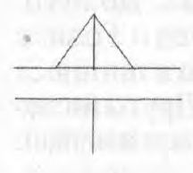
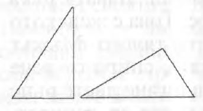

Беседа 3644 от 3877 · Беинса Дуно
Перпендикулярът
Пишете: „Кое е най-мекото в живота“ – според вашето разбиране. На физическото поле кое е най-мекото? Щом има най-твърдо, има и най-меко.
Сега най-трудното нещо на старите хора е да правят упражнения. Няма по-голямо мъчение от това за тях.
(Направихме следното упражнение: дясната ръка настрани, после перпендикулярно). Що е перпендикулярът? Единственото нещо, което мери всичките неща, то е перпендикулярът. За да намериш мястото, ако не знаеш да дигаш перпендикуляра, ти не можеш да мислиш, не можеш да чувстваш, не може да действаш. Както е ръката горе перпендикулярно, бавно се снема настрани на тялото. Това е отклонение от перпендикуляра. Когато дигате дясната ръка, то е мъжкият перпендикуляр, разбираме мъжката идея на перпендикуляра, какво трябва да правиш. Лявата ръка се дига настрани и перпендикулярно горе. Това е женското разбиране. Сваляне на ръката настрани на тялото. Мъжът като дойде от перпендикуляра до краката, спира се вече неговата деятелност. Двамата започват: вдигане двете ръце настрани и перпендикулярно горе. Пръстите се допират, образуват триъгълника на живота. Отдалечаване на ръцете, но пак са нагоре. Това е разцъфтяването. Ръцете настрани и надолу. Това е завързването [на] плода. Ръцете пак нагоре, хубаво изпънати нагоре и допрени пръсти. Свалят се ръцете, както са допрени пръстите до самата глава и пръстите се свиват под прав ъгъл с китката, и образуват една плоскост пръстите на двете ръце. Издигане ръцете над главата. Пак сваляне към главата и допиране до нея. Няколко пъти. Сваляне ръцете настрани.

Щом хората имат един перпендикуляр в челото, правата са им еднакви. Какво подразбира правото. Правото подразбира да ти са дадени възможности да свършиш някаква работа. Право имаш да бъдеш някому син, право имаш да бъдеш някому слуга, право имаш да бъдеш някому господар. Какво разбирате под думата, че той има право да бъде господар. Господарят върви към центъра, към перпендикуляра, а пък слугата върви към периферията. Всеки, който се движи към периферията, е слуга. Всеки, който се движи по закона на перпендикуляра, господар е. Значи ти не можеш да бъдеш господар, ако нямаш за основа Божественото начало в себе си. То е невъзможно. Значи там ти си представител на Божественото. Господ е Онзи, Който създава нещата, а не онзи, който властва, защото може някой да властва и да не ги е направил, може да властва и да не ги е създал. Бащата и майката са господари.

Френолозите поставили формата на нещата на средата на челото, между веждите. Де седи величината на някой предмет? Говорим, че някой предмет е велик, голям. До формата е този център. Казвате: „Къде е тежестта на един предмет?“ До него на веждите. Казваш: „Цветът на предметите къде е?“ До него. „Редът на нещата?“ До него. „После смятането?“ До него. Цял един ред. Това е фактическият свят, физическият свят. По същата линия се намира и онова, най-низкото чувство, да ядеш. Друго низко чувство на същия ред, но настрани на главата, е да измъчваш хората.
Казвате: „Що е злото в света?“ Злото това е оръжие на провидението. Провидението, който не слуша, го наказва. И вие имате едно оръжие, и вие сте въоръжен. Когато някой не слуша, дойде вашият стражар. Детето не слуша, изведнъж вие го наказвате. Та вие искате да знаете що е злото. Оръжие на провидението. Не изисква никаква критика. Когато го критикувате, бомбите се пукат и нищо не остава от него. Казвам: що е злото в света и що е Доброто? Злото е оръжие и Доброто е оръжие. Когато Бог иска да направи Добро, праща Доброто; когато иска да накаже някого, праща злото. То са екзекутивни сили, едновременно и наказват, и възнаграждават. Ако можеше светът да бъде създаден без зло и Добро, трябваше да бъде така създаден. Сега е така създаден. Идете навсякъде в света, затвори колкото искате. Сега ние седим и сме песимисти. Казваме: „Не може ли без война?“ При сегашните условия не може. И за бъдеще пак без война не може. Само за бъдеще патроните няма да убиват, няма да имат олово, само барут ще имат. Ще изгърмят. Тогава войната няма да бъде да се убиват хората, но само да се наказват. Ще има изстрели от ябълки. Отдалече ще тури някой, ще обърне гърба и ще ударят с ябълка, туп по гърба. Искат да ти ударят 20 удара, 20 ябълки. Като те ударят, ти ще събереш 20 ябълки. Може и с круши да те накажат. Ще удрят и ти ще ги събираш. Като ще наказват за бъдеще, ще го турят прицелна точка и започват с някой плод, според сезона. Ако е във времето на черешите, с череши ще го наказват; ако е във времето на сливите, със сливи ще го наказват. То е само една форма. Буквално няма да бъде така, но приблизително. Сега какво е наказанието. Всякога в Природата наказанието е да се трансформират известни сили. На български имате думата наказвам – наказвам. Като турим предлога на, разбираме наказвам с какво. Значи му турям нещо в ухото. Като бият тия трептения в ухото, като му говори, наказва го. Наказва тъпанчето на ухото, че като удря, му казва да бъде внимателен или да яде добре. Наказанието е да учиш добре, да свириш добре, да пееш добре. То е все наказание. Защо удря в тъпанчето от едната и от другата страна? Като се наказва, разбира нещо. Сега като се наказва, разбира се – задницата с пръчка. Не се наказва задницата, ухото се наказва. Разумният човек ще разбере думата наказание. Говори се нещо, наказва се тъпанчето. Ако слушаш хубаво и разбираш хубаво, тогава наказанието е на място. Обяснете ми тогава думата бия . Думата казвам не става само на физическото поле. То е биене в по-висок свят, снето е. На -то се туря, понеже показва, че тази дума е снета, снета в един свят и приложена. Думата наказвам , значи приложение. Какво значи наказание? Най-приятното наказание е да се накаже тъпанчето. С какво? Отдалече, като говориш на един човек, да го накажеш. Като го накажеш, нему е приятно, че си го наказал. Казва: „Много хубаво ме наказа“. Като не му кажеш хубаво, казва: „Не знаеш да наказваш“. Един музикант и той наказва музикално, с цигулката ще го накаже. Един музикант с пеене може да го накаже, един музикант с арфа може да го накаже, с китара може да накаже.
Сега вие седите и мислите, в оня свят като идете, какво ще правите. Чудни сте: какво ще правите в оня свят. С вашето разбиране, което имате, вие като ходите на кино, така и оня свят ще го видите като на кино. Оня свят на платно ще го турят и вие ще се върнете, и мислите, че този свят на киното, е турено нещо, което не е вярно. Ще видите оня свят, тъй както в една американска колегия учениците искали да изпитат професора по зоология вещ ли е, разбира ли. Онези, способните ученици, направили един нов бръмбар, като взели крачка, крилца от разни бръмбари и направили нов. Занесли го на професора и му казват: „Господин професоре, един нов бръмбар, не можем да го класифицираме“. Той го разгледал и видял, че има части от разни бръмбари и им казал: „Това е хъмбък*, това е ваша измислица“. В Природата няма такива работи. Ще ни даде някой хъмбък, някаква идея, създадена от частите на какви ли не бръмбари. Казва: „Към коя категория спада този бръмбар?“ Казвам: всичките човешки идеи са хъмбък. Туй, което ние разбираме и виждаме, че във всеки век има особени бръмбари. Под думата Божествена идея разбираме – ония идеи са Божествени, които работят за развитието на човека. По какво се отличават Божественият и човешкият порядък. В човешкия порядък страданието всякога следва. Страданието е една необходимост. Наричам го окопаване. Когато се прави някаква къща, може да се окопае. Страданието е окопаване на нещата, ориентиране на нещата. Туй окопаване се използва, след като се направят работите, туй окопаване се покрива. Най-първо окопаваш и посаждаш, завличаш, посаденото трябва да израсте. В Божествения порядък страдание няма. Какво има в страданието? На български щом страдаш, значи ти се движиш в периферията на нещата. Ти си излязъл от центъра. Тия са двата мощни процеса, които съществуват. Най-първо имате едно движение от центъра към периферията до крайния предел, додето едно движение може да иде. Обратният процес е от периферията към центъра. В дадения случай трябва да знаеш дали ти се отдалечаваш от центъра, или се приближаваш към центъра. Аз така правя сравнението – излизате от центъра, това е артериалната кръв, връщането към центъра от периферията, това е венозната кръв. Тя трябва да влезе в дробовете, да се прочисти и да мине през сърцето, и пак да мине към периферията. В тия двата процеса човешкият организъм се снабдява с необходимата храна за живеене. Сега, щом страдаш, ти си на физическото поле. То е неизбежност. Ако искаш да не страдаш, трябва да излезеш из този порядък. Да допуснем, че сега живееш на северния полюс или че живееш на екватора. Каква е разликата в живота? На северния полюс ще се намериш в трудно положение. Трябва да ходиш да ловиш риби, тюлени за ядене. Тропическите места са богати с растения, накъдето минеш, ще намериш плодове нападали. Навсякъде плодове има, колкото искаш. Животът е по-сносен. На северния полюс не е така сносен. Казвам: сега ние сме на северния полюс. Казвам: трябва да се лови риба. Какво ще ядеш? Няма жито, вегетарианец не може да бъдеш. Вегетарианец може да бъдеш на екватора. На северния полюс никакъв вегетарианец не може да бъдеш. Нито ябълки, нито круши, никакъв плод няма. Има само риба, мечо месо, има тюленово месо. Хората разглеждат какви трябва да бъдем. Ти на екватора или месо ще ядеш, или плодове ще ядеш. Ако на екватора ядеш месо, повече ще страдаш; ако не ядеш месо, по-малко ще страдаш. Ако на екватора ядеш растителна храна, ще благуваш повече. Ако на северния полюс не ядеш растителна храна, ще страдаш повече.
Една идея ползва човека само когато съзнава. Когато си вегетарианец, трябва да съзнаваш, че вегетарианецът, ако не е на екватора, не може да бъде вегетарианец; той трябва да има убеждение. Убеждение значи да имаш онези благоприятни условия. За да бъдеш вегетарианец, трябва да имаш благоприятни условия, които провидението ти дало. Аз не мога да създам благоприятните условия. Може да използвам само условията, които ми са дадени. Една мечка ти я възпитавай, колкото искаш, тя мечка си остава. Светия не може да я направиш, учен човек не може да я направиш. Какво може да я направиш? Може да я разиграваш, да си изкарваш прехраната. Какво може да направиш един кон? И него може да го впрегнеш в каруцата, да ти работи и да се прехранваш. Ако една идея ти служи само за прехрана, тя е от мечи, от говежди характер. Ако една идея те ръководи, е от друг характер. Казва: „Аз имам мисъл“. Каква мисъл имаш? Меча мисъл? Конска мисъл?
Сега всеки един от вас има три екватора: един на физическо поле, един в духовния свят и един в Божествения свят и там има екватор и той е най-възвишеният. Той е най-възвишеното, което ние имаме на Земята, то е нашият ум. Това, което е най-възвишено на Земята, е физическото на Божествения свят. Най-възвишеното, което имаме, чувствата ни, то е физическо на духовния свят. А пък онова, физическото, то е волята. Сега някои казват: „Да имаме воля“. Вие правите ли разлика някой път, какво е отношението между ума, сърцето и волята. Волята е външното проявление на човека. В човека на Земята Божественото е умът, духовното е сърцето и физическото е волята. Тебе ти се яде нещо, волята е. Ще идеш някъде, ще вземеш тази храна, ще си доставиш, ще ядеш. Волята значи те снабдява с духовните работи, с елементите на яденето. Ако човек осакати волята си на Земята, няма да може да се храни правилно, няма да диша правилно и няма да може да мисли правилно. За да мисли правилно, мозъкът му трябва да бъде добре устроен. За да чувства правилно, дробовете му, сърцето му трябва да бъдат добре устроени. За да има правилен физически живот, стомахът му трябва да е правилно построен. Значи, ако стомахът е разстроен, физическият живот не е нормален. Ако дробовете му са разстроени, духовният му живот не е нормален. Ако мозъкът е разстроен, Божественият живот не е нормален на Земята. Под думата възпитание, разбирам: да възприемем Божествения порядък в нас, да възприемем духовния порядък в сърцето и да възприемем физическия порядък в стомаха. Има едно съотношение между стомаха, който опитва Божиите блага, и дробовете, които опитват духовните чувствания, и мозъкът, който схваща Божествените мисли и ги проектира на физическото поле. Тогава, ако умът не се развива правилно и челото не може да бъде правилно създадено. Ако сърцето е създадено правилно и скулите ще бъдат правилно създадени. Ако волята е създадена хубаво, ако стомахът е правилно създаден, тогава и долната част на лицето под носа ще бъде правилно създадена. Тази част е свързана със стомаха, с удовете – краката и ръцете. Ако у тебе ръцете и краката не са организирани добре, тогава и тази част не е добре организирана. Ако чувствата са добре организирани, непременно носът ще бъде добре организиран. Ако мисълта в трояки отношения е добре организирана, челото ще бъде организирано. Не може човек да мисли, ако челото не е добре организирано и проявено. Площ трябва да има. Да кажем, че ти живееш в стая, която е метър и половина. Как ще живееш? Може да живееш. Ако имаш една стая от 4-5 метра и ако си вън в света свободен, ти си свободен в своите действия. Всякога в мисълта си във физическото поле трябва да имаме широк простор. Вземете сега един, който пее, и един, който свири на цигулка, или на китара, или на пиано. Той трябва да знае местата на всичките тонове, да е добре запознат. Когато свири, трябва да знае добре времето. Като погледне нотите, да знае всяка нота каква част от времето изисква. После трябва да знае къде да постави тона. Аз намирам някога, когато цигуларят свири или когато някой пее, че тонът не е турен на място. Ако един тон не може да го туриш на място, не е правилен. Всеки тон в даден момент изисква пространство. Ако не го туриш на неговото пространство, не е правилен. Да обясня. Вземете един, който фотографира, или един, който рисува. Той се поставя в един фокус, отдето всичките лъчи на известен предмет идват. Добре се отразяват върху ума, той може да ги скицира. Щом поставиш нещата на фокуса, предметът е ясен. Ти имаш фокус, поставил си нещата на техните места; ако не ги поставиш на техните места, образът не е ясен. По същия закон фотографираме една мисъл. Когато не си намерил фокуса, тази мисъл не е ясна. Щом намериш фокуса на тази мисъл, мисълта е ясна. Най-първо всички трябва да търсите фокуса. Фокусът е перпендикуляр. Всяка мисъл има свой перпендикуляр; всяко чувство има свой перпендикуляр; всяка постъпка има свой перпендикуляр. Щом намериш перпендикуляра, тогава в живота всичко върви редовно. Запример ти си градинар. Ако разбираш добре геометрия, веднага ще преведеш някоя вода от някое място и ще знаеш откъде да я прекараш, да влезе в градината. Ако не знаеш, ще я прекараш там, дето има големи трудности.
Сега всички очаквате по-лесен начин. По някой път питате какво ще бъде в оня свят. Вие тоя свят не сте научили, какво ще учите оня! Аз сравнявам: ти си в отделенията и питаш какво ще бъде в прогимназията. Свърши отделенията и тогава ще видиш какво ще бъде в прогимназията. Ти си в прогимназията и питаш какво ще бъде в гимназията. Свърши прогимназията и тогава ще видиш какво ще бъде в гимназията. Или питаш какво ще бъде в университета. Свърши гимназията и ще видиш, какво ще бъде в университета. Ти си в отделенията и питаш какво ще бъде в университета. В университета пак ще бъде както в отделенията, пак на чинове ще седиш, само че професорът няма да ти разправя буквите, но ще разправя за някои отвлечени предмети и форми. Да кажем развивате университетската мисъл: моето право. Какво разбирате под моето право. Казваш: „Разбирам. Имам право да ям“. То е на физическото поле. Моето право. Ти имаш право да живееш някъде. Но казваш: „Аз искам да бъда човек свободен“. Че то е университет. Твоето право, в света да живееш, какво е? Как ще живееш? Ако нямаш баща и майка, не може да живееш. Ако нямаш братя и сестри, не може да живееш. Някой казва: „Аз искам сам да живея“. Сам да живееш, подразбира с всичките да живееш хармонично. Това е самота. Значи на периферията си да обръщаш. Една ябълка сама ли е тя? Като форма е сама. Но тази ябълка е създадена от хиляди и милиони клетки съединени, които трябва да ги изядеш в дадения случай. Известни клетки има в костилките и тази костилка трябва да я посадиш. Казваш: „Аз искам сам да живея“. Ти седиш сам в някой манастир. Често калугерите са бягали от живота, да ги не съблазняват жените. Той седи там и целия ден жените са в ума на калугера. Кой ще те избави от съблазън? Жената бяга от мъжа, мъжът седи в ума ѝ. Мъжът бяга от жената, жената седи в ума му. Някоя майка бяга от децата, тя като седи, децата са в ума ѝ. Счита ги за съблазън. То е едно неразбиране на живота. Бащата и майката, това са проявления на мекия и силния принцип у Бога, две страни, Любов и Мъдрост. Под думата баща и майка какво трябва да разбираме? Любов и Мъдрост. Под думата син или дъщеря трябва да разбираме Истината. Майката представя Любовта, бащата представя Мъдростта, синът това е Истината. То е форма в света. Ако ние отделим Любовта, разбираме майката, това не е Любов. Ако отделим Мъдростта, ние разбираме бащата... Под Истината разбираме синът или дъщерята. Синът и дъщерята вече представят един поляризиран свят. Истината и свободата заедно вървят. Истина, свобода и работа заедно вървят. Свободата това е майката. Истината това е бащата. Работата това е синът. Мъдрост, знание и учение. Мъдростта това е бащата. Знанието това е майката, учението е синът или дъщерята. Любов, живот и движение, те са една тройка. Животът е бащата, Любовта е майката, движението е синът. Сега нахвърлям това като известни поетически форми. Може да не са разбрани. Не е необходимо да ги разберете. Казвате: Аз трябва да го разбера. Не е необходимо да разбирате какво нещо е яденето. Елементарно ти трябва да разбираш тази храна приятна ли е, или не. От какви елементи е създадена, отпосле ще учиш. Всеки един от вас, който взема храната, трябва да знае: има нещо в човека. В даден момент човек е трояк. В човека има нещо Божествено, което разбира елементите. Като вземеш храната, трябва да разбереш. Ти като ядеш, баща ти и майка ти вземат участие, малко трябва да разбираш. Онова дете, което е родено, разбира ли какво казват бащата и майката? Каквото каже детето, бащата и майката трябва да го приемат и няма какво да спорят, но всичко знаят. Детето и то разбира дали яде сладка, или кисела храна. После разбира дали тази храна е приятна, или му да[ват] това, което то иска. Казвам: в дадения случай трябва да знаете дали тази храна, която сега възприемате, ви дава здраве. За бъдеще ще дойде[те] до положението да знаете какво знае майка ви. Сега дъщерите мислят, че техните майки са невежи. Лъжат се. Майката, която не говори, не показва, че е невежа. Тя не иска да говори. Казва: „Майка ми не е свършила гимназия.“ Който е свършил гимназия, не е учен. Който е свършил университет, не е учен. Мислите ли, че като прекарате на някоя плоча една песен, че пее хубаво, тази плоча е учена. Аз гледам, доста учени плочи има. Учена свещ наричам свещ, която сама се пали и сама изгасва. Тя е учена. Свещ, която очаква, аз да я паля и да я гася, тя не е учена. Една плоча, която очаква, аз да я туря на кръжилото, да я навия да се завърти, че да пее, тя не е учена.
Казвам: не разчитайте на онова, което се върти, то е хубаво, то е за забавление. Онова, което може да ви помага в даден случай, какво трябва да бъде? Не разчитайте на храна, която забавлява само вашия вкус. Една храна, която задоволява нуждите, задоволява вашата мисъл, вашите чувства и вашата воля. Онази, която не задоволява ума ви, не ви е полезна, защото в храната може да правите опити. Имате известно състояние. Правете малки опити. Имате неразположение. Мисълта ви е тъмна, нямате светлина, чувствата ви не са хубави, не знаете какво да правите. Изяжте една хубава ябълка. Може би след като изядете ябълката, в ума ви да влезе светлина, да влезе топлина, чувствата ви стават по-приятни, ставате енергичен, казвате: „Може да направя това“. Тази храна е правилна. След като изядете храната, във вас тъмнината се увеличи в ума ви и в сърцето ви, тази храна не е естествена. Всяка храна, която внася светлина, топлина, внася и сила в човека, тази храна е правилна. Хигиената казва, колко калории трябва да има в храната. То са човешки работи. Като изям една ябълка, тази светлина, която е необходима, дадена от Бога, веднага трябва да дойде в моя ум. Отношението между мене и светлината е нормално. Когато възприема тази светлина, отношението на Божествения свят е нормално. Когато възприема топлината, отношението на духовния свят е нормално. Когато възприема силата, отношението на физическия свят е нормално.
Трябва да имаме връзка с перпендикуляра, Божествен перпендикуляр, духовен и физически перпендикуляр. Да се самовлада. Някой път искаш да избухнеш. Чакай, избухването мяза на пушкало. Играли ли сте си на пушкала. Те се правят от свирчина. Вземат топки от калчища, тъпкат една топка, втора, остава между тях въздух, има едно плюскало, като изтегли и гръмне. Някой път като те плесне, доста силен удар може да причини. Всички тия плюскала са неестествени. В Природата под естествено положение разбираме туй, което организира, в което като се организират нещата, тебе ти е приятно. Запример някой път слушаш една песен, не ти е приятна. Щом една песен тебе ти е приятна, тя организира някого[нещо] в тебе. Ако говорът организира нещо в тебе, тебе ти е приятно. Ако не организира нещо в тебе, не ти е приятен. Винаги трябва да следваме приятното, онова Божественото в нас, което внася светлина. Всякога говорът, какъвто и да е, художеството или музиката, за да бъдат естествени, трябва да внасят светлина. Малка светлина да внасят, малка топлина и малка сила. Ако внасят, ще се прояви нормално.
Сега се подига въпроса: какво да правим със сегашния живот. Сегашният живот е следствие от неразбрания живот на хиляди минали поколения, трябва да се изправят. Вие по някой път осъждате Ева, че защо така постъпила, защо яла от ябълката. Та вие всеки ден вършите погрешката на Ева. Седите при дървото и току искате. Казва: „Я ми кажи една малка лъжа“. Излъже го. Ева излъга ли в дадения случай? Тя се излъга, тя не излъга. Адептът излъга Ева. Ева не излъга, но тя предаде лъжата, стана проводник на лъжата за Адама. Казва: „Знаеш ли онзи човек какво казва? Ние като ядем, като Бога ще станем свободни. Аз ядох от този плод и усещам, че съм вече като Бога.“ „Тъй ли, чакай и аз да ям“. Като «де и Адам, и двамата се усетиха голи. Дотогава те имаха много хубави мантии. Ева имаше много хубава мантия, огърлица, много скъпоценни камъни. Като «де този плод, той я приспа, сне огърлицата и тури такава потърлачета на врата. Каза ѝ: „Дай и туй на мъжа си.“ Като «де Адам от плода, приспа и него, и него обра, той сне и на двамата дрехите, те останаха голи. Като останаха голи, скриха се, в Райската градина се скриха. Господ го вика: „Адаме, Адаме“. Той се сгушил някъде. Учен човек беше Адам. Като изкара Господ всичките животни, тури им имена на всичките, отличен зоолог. Ева беше отлична професорка по ботаника, знаеше всичките форми в Рая, беше ги изучила. Изучаваше последната форма, само че не улучи метода. Вие седите при дървото някой път и искате да кипнете, да кажете някоя лоша дума. Казвате: „Колко си будала“. Питам, като кажеш: „Колко си будала!“, какво придобиваш? Като кажеш: „Колко си будала!“ – ти ставаш будала. Като кажеш: „Колко си неразбран“ – ти ставаш неразбран. Каквото туряш на другите хора, това и ставаш. Като кажеш: „Колко си добър“ – ти добър ставаш. Като кажеш: „Колко те обичам“ – и тебе те обичат. Каквото говориш, това върху тебе иде. Не е играчка. Вие си играете с едно оръжие. На един евреин посочват празен револвер, той казва: „Не, не.“ – „Празен е.“ – „Може, но хата може да стане. Револверът не го бутайте, хата може да стане.“ Всяка дума, която кажете, знайте, че тя има последствия върху вас, ще ги опитате. Никога не правете това, което не обичате – едно от правилата. Всякога иде в нас желание да се проявим. Казваш: „Аз това трябва да го направя“. Ако пееш, не бързай да пееш. Всички, гледам, бързат да пеят. Най-първо уталожи ума си, да дойде светлина, топлина и сила, тогава може да пееш. Ако светлината не е дошла, ако силата не е дошла, ти не можеш да вземеш верен тон. Може да пееш, но успокой се вътре хубаво. Нека да минат 5-10 минути. Аз по някой път гледам музиканти, идат, седнат на пианото, гледа публиката 2-3 минути, прекара ръцете по пианото, като утихне публиката хубаво, тогава започва изведнъж да свири. Вие сте артист, като се явите, във вас чакайте, всичко във вас да утихне. Вие сте публика, чакайте да утихнете. Докато не е утихнала публиката, нито свирене, нито пеене. Някои казват: „Нека започнем, те ще утихнат“. Не, не може да снемеш един образ ясен, ако нямаш една тиха повърхност, върху която отражението може да стане правилно. Когато водата няма никакво движение, отражението е ясно. Във фотографирането, когато въздухът не е развълнуван, но е тих, отражението е право. Когато е облачно Небето, не стават тия отпечатъци ясни, както при един хубав ден. Казвам: Когато нашият ум е ясен, нашето сърце ясно и нашата душа ясна, тогава отраженията на Божествените мисли, чувствания и сили правилно се проявяват. То е начин на възпитание. Вие казвате: „Не мога да търпя“. Като ти свържат ръцете и краката, не може ли да търпиш? Като те свържат хубаво, може да търпиш. Защо невързан да не можеш да търпиш? Някой път е хубаво, като не може да търпиш, да повикаш един свой приятел и да му кажеш: „Я ми свържи ръцете и краката, да се опитам дали мога да търпя“. Ще кажеш: „Свържи ръцете и краката ми, пък излез навън и ела след половин час да ме отвържеш“. Няма ли да чакаш този приятел? Защо да не можеш да търпиш по същия закон несвързан? Като седиш на стола, не ти се седи. Защо да не седиш на стола и половин час да не мърдаш. Като те завържат за някое дърво, къде ще се мърдаш. Защо да не седиш на стола, без да си свързан и да го направиш. И несвързани като сме, свободни да го направим. Сега, ако направим един опит за пет минути да се концентрираш, ще имаш сърбеж по цялото тяло, ще започне щипаница, щипящи мисли. Ако не сте свикнали, ще те хапе. Ти трябва да седиш. Хапе, не хапе, като че нищо няма, да не обръщаш внимание. По лицето ще те хапе, по ухото. Някаква болка те хване, ти се мръднеш. Тия неща са чужди. Какво нещо е болката? Болката е една илюзия. Тя е един лъскав, книжен нож, като те мушне, мислиш, че ще те убие. Като те мушне, книжният нож ще се счупи. Всичките илюзии, които прекарвате са такива. Направите някаква погрешка, мислите – целият свят знае. Минавате облечен с хубава дреха, мислите, че всичките ви гледат. То е заблуждение. Всеки човек си върви по пътя, той не обръща внимание хич на вашите обуща или дрехи, минава, като че не съществуваш. Погледне те. Какво си мисли? Ти мислиш, отдето минеш, всички ти обръщат внимание. То е заблуждение. Ти си единственият, който мислиш за себе си, нищо повече. Когато идеш между хората и искаш да знаеш дали тия хора мислят хубаво за тебе, ти ако си излязъл от къщи неразположен и като идеш между тия хора, ставаш разположен, тия хора мислят хубаво заради тебе. Ако си излязъл от къщи добре разположен, като влезеш между хората, изгубваш разположението си, тия хора мислят зле заради вас. Това е моята диагноза. Казвам: хората, между които се възстановява вашето нормално състояние, тия хора са добри, добре мислят заради вас, не са лоши. Тия, между които влизате и изгубвате вашето разположение, тяхната мисъл не е творческа заради вас, не действа добре. Тогава искате да знаете какво Господ мисли заради вас. Аз да ви кажа какво Господ мисли заради вас. Ние какво сме създали в света, за да обърне Господ внимание на нас? Искате Господ да ви обърне внимание. Един учител обръща внимание на учениците, които учат и обичат предмета му. Хората обръщат внимание на онзи учител, който рисува. Хората обръщат внимание на онзи певец, който пее хубаво. Хората обръщат внимание на онзи, който е здрав и може да работи. Нищо не правим в света, с какво ще привлечем вниманието на хората? Или умът ни, или сърцето ни, или волята ни да привлече, трябва да има плод в ума, плод в сърцето, плод във волята. Хубавите мисли са, които привличат вниманието на хората. Хубавите чувства са, които привличат вниманието на хората. Добрите постъпки привличат вниманието, Доброто в нас привлича вниманието. Писанието казва: „Възлюбил си Истината, която е в нас“. Истината това сме ние, децата, които живеем съобразно с Волята Божия. Ние като казваме Истина, трябва да обичаме Истината в нас. Синовното наше отношение към Бога, това е Истината. Ако един човек няма Любов към Истината, той няма синовно отношение към Бога. За да привлечеш вниманието на Бога, ти трябва да обичаш Истината. То е синовно отношение. И тогава трябва да бъдеш готов, каквото Господ казва, да го направиш, никакво разсъждение да няма. „Направи това“ – направў го! „Иди“ – иди! „Ела“ – ела! „Седни“ – седни! „Чети“ – чети! „Яж“ – яж! Каквото ти каже, направи го! Когато хората искат да ти кажат нещо да направиш, ти ще се спреш. Там законът е друг. Кракът ли трябва да служи на човека или човекът трябва да служи на крака си? Най-първо кракът трябва да служи на човека, после човек ще служи на крака си. Дълго време като съм ходил, аз ще слушам краката си, трябва да бъда внимателен, да ги не пренасилвам. Да почувствам, че краката се нуждаят от почивка, ще обърна внимание на тия крака. Значи уважение имам. Починат си, пак ще тръгна. Дойда до известно място, почувствам, че краката са уморени. Най-първо те ме слушат, работят. Пак същият закон е и за ръцете. Те работят, уморят се, спра се да си починат. И мозъкът като се умори, спра се.
Бих ви дал за седем дена по три пъти на ден – сутрин, обед и вечер – само по една минута да мислите само Добро. Никаква лоша мисъл да не влиза, никакво лошо чувство и никаква лоша постъпка, като че живеете в Рая, като че всичките хора по Бога живеят. За една минута да направите опита. Сутрин като станете, като че нямате никакви неприятности, като че сте богати, като че целият свят е на ваше разположение. Сега дали ще го направите, то е друг въпрос. Един опит е без пари – казват турците. Сутрин обед и вечер ще мислите за Истината. Сутрин ще мислите за себе си, на обед ще мислите за майка си, а вечер ще мислите за баща си. Първия ден така. Втория ден ще измените нещата. Сутрин ще мислите за майка си, на обед – за баща си и вечер ще мислите за вас. На третия ден пак ще ги измените. Сутрин ще мислите за баща си, на обед за майка си и вечер пак за себе си. Сега онези от вас, които се занимават със закона на Любовта, направете го. Онези, които не се занимават с Любовта, вие сте свободни. Българите често казват: „Като тръгнат праведните за другия свят, ние другите, грешниците, ще се хванем за краката им“. И да не правят упражнението, ще се хванат за краката на праведните. За краката на праведните не може да се хванете. Няма нито един от вас, който да е сирак. Ако сте сираци, на физическото поле сте. Ако баща ви и майка ви спят, то сте в духовния свят. Ако баща ви и майка ви са будни, то сте в Божествения свят. Опитът е за Божествения свят. Между духовния и Божествения свят баща ви и майка ви да бъдат. Майка ви е онази, която ви обича. На Земята има един, който ви обича. То е майка ви. Има някой, който ви обича. То е баща ви. Най-малко двама души има, които в даден момент ви обичат. Няма изключение. Да кажем: вие сте майка. Тогава къде е майка ви. Твоята майка е умряла, то твоята майка е у тебе. Ти си майка, ти изпълняваш една длъжност. Твоята майка е отгоре, наблюдава те. Казваш: „Нямам майка“. Имаш майка, занимава се със знанието. Баща ти е там. Правиш някаква работа, ти си сам. Онзи, истинският човек, който прави Доброто, то си ти. „Къде съм аз?“ Аз съм човекът, който прави Доброто. „Обичам някого“. Там е майка ми. Дето е Любовта, там е майка ми. Дето е Мъдростта, там е баща ми. Всякога в Мъдростта е баща ни, в Любовта е майка ни, в Истината сме ние. Или в живота е майка ни, в знанието е баща ни, в свободата сме ние. В движението е майка ни, в учението е баща ни, в работата сме ние – пак същия закон. Ние сме, които работим, децата работят. Имате: Истина, свобода и работа. Щом знаете, баща ви е с вас. Щом обичате, майка ви е с вас. Щом работите, то сте вие. Сега ще преведа. Ако сме сами без парици, ще фалира предприятието.
Аз ще ви наведа един прост пример, който постоянно седи пред вас. Не сте обърнали внимание, ако орехът седи, никога сама няма да се пукне черупката. Може да се развали ядката, черупката седи затворена. Но ако посеете ореха в земята, самият орех отвътре се пуква. Силни сте само тогава, когато разчупите отвътре черупката. Ако не може да разчупите отвътре черупката, вие сте слаби. Щом имате Божествени условия, външната черупка се разпуква и вие тогава израствате.
Това е Живот Вечен, да позная Тебе Единаго, Истиннаго Бога и Христа, Когото си изпратил
6-та лекция от Учителя, държана на 28.Х.1942 г. сряда 5 ч. с., Изгрев.